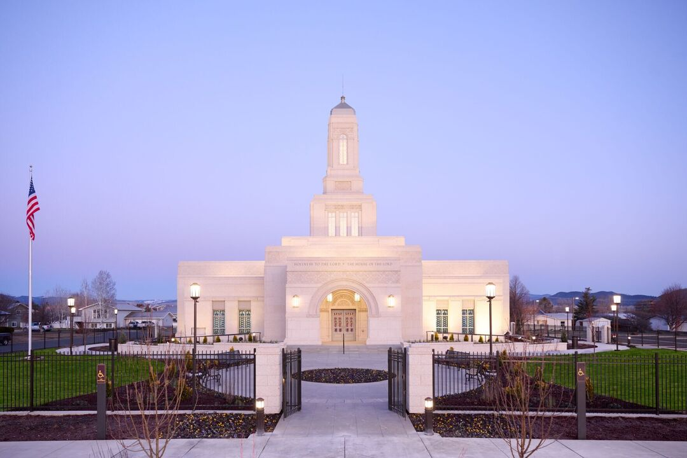
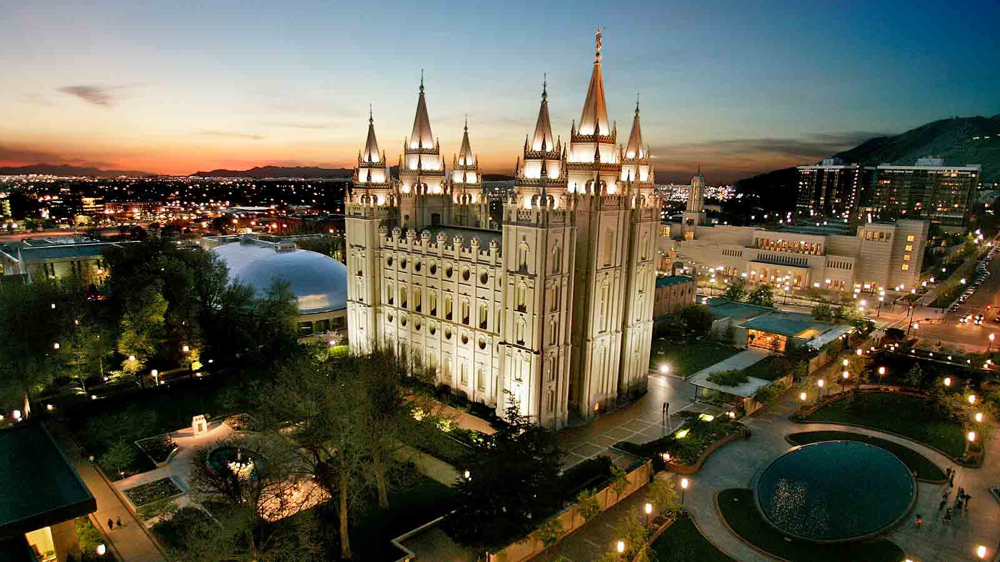
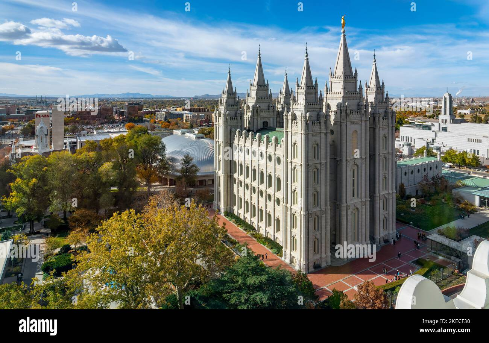

☰
Temple Album
Home
Old
New
Large
Small
HOME
The Aba Temple

The Helena Montana Temple

The New Arizona Temple
The Northern Carlifornia Temple
The Ogden Utah Temple
The philadelphia Temple

The Salt lake Temple
The Tulsa Temple
The washington- D.C Temple